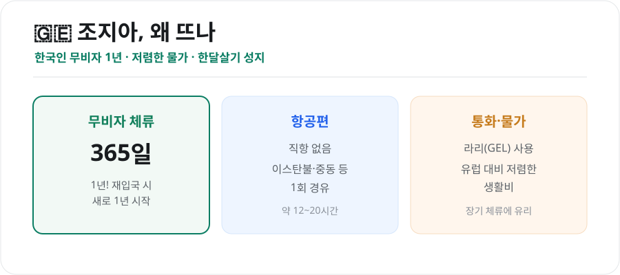
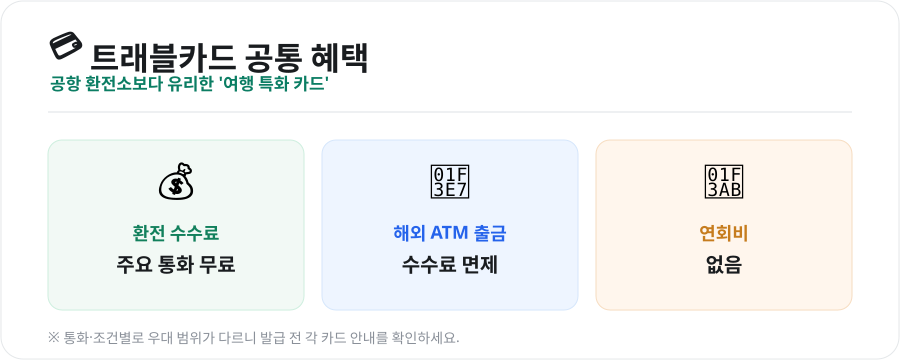
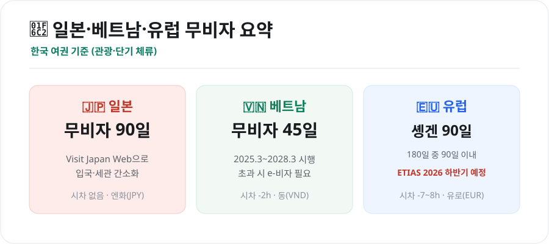

N
네이버 실시간
G
구글 실시간
키워드픽 블로그 — 지금 뜨는 이슈 깊이 보기
전체 글 보기 →키워드픽은 매일 구글·네이버에서 화제가 되는 검색어를 살펴보고, 그 배경과 맥락을 직접 정리해 알기 쉽게 풀어 씁니다. 단순 순위 나열이 아니라 ‘왜 이 키워드가 떴는지’, ‘무엇을 알아두면 좋은지’까지 담았습니다.
 IT·과학클로드(Claude) 유용한 기능·명령어 총정리 (2026년 8월) — 일반 사용자부터 개발자까지2026년 8월 기준 클로드(Claude)를 200% 활용하는 핵심 기능(프로젝트·아티팩트·파일분석)과 유용한 프롬프트, 개발자용 Claude Code 슬래시 명령어(/clear·/model·/mcp 등)를 한 번에 정리했습니다.2026-08-04
IT·과학클로드(Claude) 유용한 기능·명령어 총정리 (2026년 8월) — 일반 사용자부터 개발자까지2026년 8월 기준 클로드(Claude)를 200% 활용하는 핵심 기능(프로젝트·아티팩트·파일분석)과 유용한 프롬프트, 개발자용 Claude Code 슬래시 명령어(/clear·/model·/mcp 등)를 한 번에 정리했습니다.2026-08-04 IT·과학AI 영화, 어디까지 왔나 (2026) — 국내 첫 AI 장편·AI 배우 논란·기술과 쟁점국내 첫 AI 활용 장편 <중간계>, AI 배우 틸리 노우드 논란, 소라 앱 종료, 중국 AI 단막극 폭증까지. 2026년 AI 영화 동향과 저작권·일자리·진위 쟁점을 정리했습니다.2026-08-04
IT·과학AI 영화, 어디까지 왔나 (2026) — 국내 첫 AI 장편·AI 배우 논란·기술과 쟁점국내 첫 AI 활용 장편 <중간계>, AI 배우 틸리 노우드 논란, 소라 앱 종료, 중국 AI 단막극 폭증까지. 2026년 AI 영화 동향과 저작권·일자리·진위 쟁점을 정리했습니다.2026-08-04 생활개인파산 신청 총정리 (2026) — 자격·절차·비용·개인회생과의 차이개인파산 신청 자격(지급불능), 절차와 면책, 비용, 무료 법률지원(법률구조공단 132), 그리고 개인회생과 무엇이 다른지까지 이해하기 쉽게 정리했습니다.2026-08-04
생활개인파산 신청 총정리 (2026) — 자격·절차·비용·개인회생과의 차이개인파산 신청 자격(지급불능), 절차와 면책, 비용, 무료 법률지원(법률구조공단 132), 그리고 개인회생과 무엇이 다른지까지 이해하기 쉽게 정리했습니다.2026-08-04 시사서울 첫 '폭염중대경보' — 2026 폭염특보 3단계·기준·온열질환 대처법2026년 신설된 폭염중대경보(체감 38도)가 서울에 처음 발령됐습니다. 폭염특보 3단계 기준(33·35·38도), 발령 배경, 온열질환 예방·응급대처까지 정리했습니다.2026-08-04
시사서울 첫 '폭염중대경보' — 2026 폭염특보 3단계·기준·온열질환 대처법2026년 신설된 폭염중대경보(체감 38도)가 서울에 처음 발령됐습니다. 폭염특보 3단계 기준(33·35·38도), 발령 배경, 온열질환 예방·응급대처까지 정리했습니다.2026-08-04
생활조지아 여행·장기체류 방법 (2026) — 무비자 1년·항공편·물가·한달살기한국인이 무비자로 1년(365일) 머물 수 있는 나라 조지아. 항공편(경유), 물가, 장기체류 준비(은행·임대·통신)와 트빌리시·카즈베기 여행까지 가는 방법을 정리했습니다.2026-08-04 생활면세점 쇼핑 팁 총정리 (2026) — 면세 한도·술담배 규정·자진신고 감면입국 면세 한도 800달러, 술·담배·향수 별도 규정, 인터넷·입국장 면세점 활용법, 한도 초과 시 자진신고 30% 감면까지. 면세 쇼핑을 똑똑하게 하는 팁을 정리했습니다.2026-08-04
생활면세점 쇼핑 팁 총정리 (2026) — 면세 한도·술담배 규정·자진신고 감면입국 면세 한도 800달러, 술·담배·향수 별도 규정, 인터넷·입국장 면세점 활용법, 한도 초과 시 자진신고 30% 감면까지. 면세 쇼핑을 똑똑하게 하는 팁을 정리했습니다.2026-08-04
생활해외여행 환전 앱·카드 비교 (2026) — 트래블월렛·트래블로그·SOL트래블·토스공항 환전소보다 유리한 여행 특화 카드! 트래블월렛·트래블로그·SOL트래블·토스의 공통 혜택과 차이를 비교하고, 상황별 추천과 해외결제 절약 팁까지 정리했습니다.2026-08-04
생활일본·베트남·유럽 여행 준비 총정리 (2026) — 무비자·통화·시차 한눈에 비교인기 여행지 일본·베트남·유럽의 무비자 조건, 전자여행허가, 통화·시차·전압, 나라별 준비 포인트를 한 표로 비교했습니다. 2026년 기준 최신 정보로 정리.2026-08-04 생활해외여행 eSIM 추천·비교 (2026) — 로밍보다 싸게, 어떤 걸 고를까해외여행 eSIM, 로밍·포켓와이파이와 뭐가 다른지부터 Airalo·Holafly·말톡 등 주요 업체 비교, 나에게 맞는 선택법과 개통 순서까지 초보자 눈높이로 정리했습니다.2026-08-04
생활해외여행 eSIM 추천·비교 (2026) — 로밍보다 싸게, 어떤 걸 고를까해외여행 eSIM, 로밍·포켓와이파이와 뭐가 다른지부터 Airalo·Holafly·말톡 등 주요 업체 비교, 나에게 맞는 선택법과 개통 순서까지 초보자 눈높이로 정리했습니다.2026-08-04